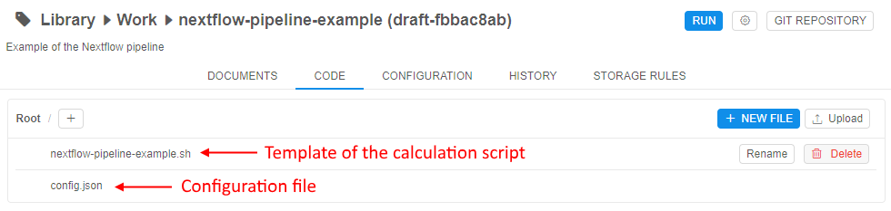
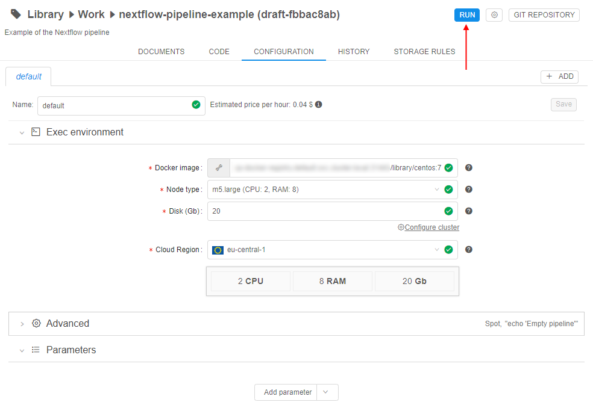
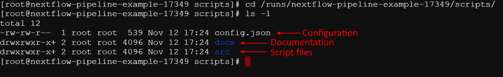
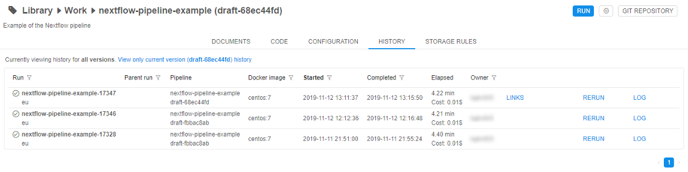

Pipeline objects concept
In general, pipelines represent a sequence of tasks that are executed along with each other in order to process some data. They help to automate complex tasks that consist of many sub-tasks. Pipelines allow users to solve a wide range of analytical tasks.
The Pipeline object in the Cloud Pipeline environment represents a workflow script with versioned files of source code, documentation, and configuration:
- Source code represents the code that directly shall be performed to solve tasks according to the specific pipeline needs
- Configuration represents the special config that contains all settings for the environment in which the pipeline shall be performed
- Documentation represents the set of documents that describe purposes, main solving tasks, features of the specific pipeline, etc. This is an optional part of the Pipeline and could be omitted
Under the hood, each Pipeline is a GitLab repository.
So, each of the constituent Pipeline parts represents one or more versioned files in that repository.
The data processing via pipeline runs, in a nutshell, can be described in these several steps:
- The user prepares a specific calculation script that shall be registered in the Cloud Pipeline environment as the source code file of the pipeline.
- The user defines the environment for the pipeline execution - first of all, it is a specific package of software that is defined by a docker image. Also, the user defines the characteristics of the Cloud compute instance on which the pipeline will be run. All described definitions shall be specified in the pipeline configuration file.
- To store pipeline's inputs and outputs datasets the Cloud data storages shall be used. The user defines paths to these datasets as different parameters of the pipeline. Pipeline parameters shall be specified in the pipeline's configuration file.
- The user launches the pipeline execution in the Cloud Pipeline environment. This includes the following steps:
- the Cloud compute node (according to the specified characteristics in the pipeline configuration file) is being initialized
- on the initialized node a docker container (from the docker image specified in the pipeline's configuration file) is being launched. The subsequent execution is being continued in the docker container
- when the environment is set, the Git repository (corresponding to the pipeline) is being cloned to the node disk
- pipeline calculation script (from the cloned source code files) launches
- pipeline's input datasets are used for calculations (from the data storages according to the specified paths in the pipeline configuration file)
- output datasets are uploaded after calculations (into the data storages according to specified paths in the pipeline configuration file)
- After the completion of the calculation script execution, the pipeline run is being completed. The Cloud compute instance enters the pending state (no billing). The user can monitor outputs in the data storages according to specified paths in the pipeline configuration file before the pipeline run

Pipeline components
For more details about Pipeline components representation see here.
Source code
By default, when a new Pipeline object is being created from any available template - the Cloud Pipeline creates a default code file on the template's programming language. The user can manually edit this code file, add new ones or upload any count of existing code files from the local workstation. By default, all source code files are written into the /src directory of the repository. During the Pipeline execution, its corresponding repository is cloned to the compute node - so, all source code scripts will be downloaded to the node disk (more details about pipeline execution see above). Also, the user shall specify the order of scripts execution. The execution of the main (first) running script shall be specified in the Pipeline config. The execution order of other scripts should be specified in the main script or in any other, which execution is specified in the main one, otherwise, unspecified code files will be ignored.
Configuration
By default, when a new Pipeline object is being created from any available template - the Cloud Pipeline creates a default configuration json file. It contains the list of all general execution settings that are necessary for the pipeline run:
- the characteristics of the Cloud compute instance that would be initialized:
- type of instance (count of CPU, GPU, RAM) in terms of the Cloud Provider
- size of the instance disk size
- based docker image from which the docker container would be launched at the initialized Cloud instance
- the command template which would be performed at the launched docker container - here the command of the main (first) script execution shall be necessarily specified
- the name of the main script from source code
- the list of the pipeline parameters - each parameter defines the parameter for the calculation pipeline script (it could be a simple string/boolean parameter or the path to the input/output dataset)
- and others
The user can manually change these settings via the GUI elements or via the editing of the config.json file.
Documentation
By default, when a new Pipeline object is being created from any available template - the Cloud Pipeline creates a default README file. The user can edit/remove this file or upload any count of existing documents from the local workstation. By default, all documents are written into the /docs directory of the pipeline repository.
Schematic composition of the Pipeline object:

If the user makes any changes in the Pipeline object and saves them - it causes the new commit into the corresponding Git repository of that pipeline. All commits perform automatically by the Cloud Pipeline, the user only should specify commit message.
Main working scenarios
Below the main scenarios of working with the Pipeline object in the Cloud Pipeline environment are described.
Creation of a new Pipeline object
For more details how to create and configure a Pipeline object see here.
New pipeline
When the user creates a new pipeline in the Cloud Pipeline environment - it automatically leads to the creation of the GitLab repository with the same name as the pipeline.
On the Pipeline page, users can see general info about the repository that corresponds to the specific pipeline:
- the last commit checksum hash and commit message (on the picture below, it is pipeline initial commit and its automatically naming message)
- the info about the last repository update and the user name which did that update

Just created pipeline contains:
- the template of the main README file
- the template of the main file with the calculation script
- the
config.jsonfile with execution environments for the pipeline run

Edit and configure a pipeline
After the pipeline creation, the user should configure it for his needs.
Users can change the following:
- Source code
the user can manually edit the initial template code file, add new empty files and create scripts manually or upload any count of existing code files from his local workstation - Configuration
- the user can manually edit the full set of execution settings via the
config.jsonfile or via the GUI elements. Both variants are identical and supported by the Cloud Pipeline - general settings that the user should pay attention to:
- the characteristics of the Cloud compute instance that would be initialized for the pipeline run:
- type of instance (count of CPU, GPU, RAM) in terms of the Cloud Provider
- size of the instance disk size
- the cluster configuration - if the user wants to launch pipeline tasks on several nodes he can configure the cluster
- based docker image from which the docker container would be launched at the initialized Cloud instance. Each docker image contains a specific software package. The user can leverage one of the existing and available docker images or also can create his own docker image with the specific software using the Cloud Pipeline features (see below), and then use it for launch pipeline
- command template which would be performed at the launched docker container during the pipeline run - here the command of the main (first) script execution shall be necessarily specified. If in the command template no execution is specified - no scripts from the source code will be performed
- the characteristics of the Cloud compute instance that would be initialized for the pipeline run:
- if the user wants to input/output any data to/from the pipeline script during its execution - he shall configure parameters. Parameters allow varying of the set of initial data that is necessary for the pipeline run:
- each parameter has a name (required), a type (required) and a value (it could be optionally predefined or specified before the pipeline run)
- each parameter can be one of the several types ("string", "boolean", "input path", "output path" and others)
- the "string" parameter allows to transfer into the pipeline execution some string value
- the "boolean" parameter allows to transfer into the pipeline execution the boolean value
- the "input path" parameter allows to specify the path to the input dataset. The path specified as "input path" will be automatically mounted to the running docker container. The path where the file or directory will be mounted in the container is defined by the system Cloud Pipeline parameter -
$INPUT_DIR. It has default value, but also could be redefined by the user - the "output path" parameter allows to specify the path for data output. After the finish of the pipeline execution, all data from working directory of the docker container will be automatically uploaded to the output path. The path to the working directory in the container is defined by the system Cloud Pipeline parameter -
$ANALYSIS_DIR. It has default value, but also could be redefined by the user
- the user can add several parameters of each type
- so, the user can add some necessary parameters to the pipeline, use them in the pipeline code and define parameter values directly before a specific pipeline launch
- the user can manually edit the full set of execution settings via the
- Documentation
the user can manually edit/delete the initial template README file or upload any count of existing documents from his local workstation
Any saved changes in the Pipeline object automatically lead to the new commit into the corresponding Git repository. Short info about the last commit is always available to the user.
In some cases, if users want - they can work directly with Git. Note that the repository name is the same as a pipeline name:
Create a specific docker image
For some specific tasks, it might be convenient to create a new docker image that will be used for the Pipeline execution. Such docker image can contain special packages that are necessary for the specific Pipeline. A new image can be based on the existing one and simply created in the Cloud Pipeline environment.
For doing that:
- user shall launch one of the existing Docker images in the Cloud Pipeline environment (named "Tools"), allow just to initialize cloud compute instance and launch a Docker container on it. After that, the user can connect into the launched container via the SSH session (SSH Web GUI terminal), then install the necessary software and then commit the resulting container as a new Docker image or a new version of the existing one - by the Cloud Pipeline capabilities.
See more details here. - or user can create a Docker image without the Cloud Pipeline and then push the prepared image into the Cloud Pipeline registry.
See more details here.
After that, the user can leverage such image as the based docker image for his own Pipeline object.
Create a multi-configuration
For some reasons, the user may need to launch the Pipeline on different compute instances or, for example, with different sets of parameters, etc. For such cases, the Cloud Pipeline allows to create several configurations for one Pipeline object that all are saved in one config.json file but with the ability to specify which one directly should be used before the pipeline run.
Testing an existing Pipeline object
For more details how to launch a Pipeline object see here.
Launch the Pipeline
After the pipeline is created, configured and saved - it can be launched. The Cloud Pipeline allows to launch the pipeline with the saved execution settings and parameters (if they have default values) or manually configure execution settings and parameters before a specific run (such changes will not be saved in the pipeline configuration and will use only for one pipeline run).

After the pipeline was launched all described procedures are performed - the cloud instance is initialized, the docker container is launched, input paths are mounted (if they were specified before the run via the parameters) - then the main script will start execution.
As the main pipeline script is prepared manually by the user, it can be incorrect during the first runnings and contain errors. To easily debug the script the user should not launch the created pipeline and wait for the full execution, but connect to the compute node via the SSH and work with the script execution directly in the terminal.
For that, the user should set the command template, e.g.sleep infinity, to start the Pipeline in "idle" mode (not launching any script). It allows just to initialize cloud instance, launch a Docker container on it, clone the pipeline repository and perform other initialize tasks. After that, the user can connect into the launched container via the SSH session (SSH Web GUI terminal), launch and debug the script manually (the script is available from the cloned repository):


All tasks performed during the run and logs are available to the user, e.g.:

So, the user can observe for the pipeline execution in real-time.
Review the results
After completing all tasks the pipeline run ends. Output data is downloaded into the output path (if it was specified before the run via the parameters). Docker container stops. Run logs page is still available, the pipeline run gets the "Completed" state.
The user can view output data on the output path after the pipeline execution. These files can be downloaded to the local workstation or, for example, used in further calculations.
Also, each output file is marked by special tags that contain general info about the pipeline run, in which the file was received:
- user name who launched the run
- run ID in the Cloud Pipeline environment
- link to the Pipeline object
- link to the Docker image used in the run
- main characteristics of the compute cloud instance used in the run
- and others
E.g.:
For convenience, the user can view all run history for the Pipeline object with short information about the run. Each record is the hyperlink to the specific run logs page (see above), where user can review full information about that pipeline run's settings:

Deployment of an existing Pipeline object
Release the Pipeline
After the pipeline was created, configured, saved and tested - the user can release it. In the Cloud Pipeline Web GUI this action looks like creating the named version of the Pipeline object. User can't change such named version, only create a new "draft" version over it and then work with it. Then, this "draft" version also can be released as another "stable" version, etc.
Under the hood, version release is the tagging in the corresponding Git repository. When the user releases some version - he just creates the annotated Git tag.

Share to other users
The Cloud Pipeline has a useful RBAC model. The user can share his prepared pipeline with other users or user groups for further usage/common work.
There are 3 permission settings over the Pipeline objects in the Cloud Pipeline:
- Read - allows to view a pipeline, its code, configuration, settings, history of runs
- Write - allows to edit/delete a pipeline, its code, configuration, settings
- Execute - allows to run a pipeline
So, the user-owner of the pipeline (or system admin) can set combinations of described permissions to other users/user groups to rule their access to the Pipeline, e.g.:
See a simple example of the complete Pipeline running procedure here.